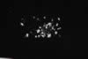

|
DOCUMENTATION_FORMAT: MINERAL
SAMPLE_ID: GDS145
MINERAL_TYPE: Sulfate
MINERAL: Bassanite
FORMULA: 2CaSO4*H2O
FORMULA_HTML: 2CaSO4•H2O
COLLECTION_LOCALITY: Heated Gypsum to Form
ORIGINAL_DONOR: Jim Crowley
CURRENT_SAMPLE_LOCATION: USGS Reston, Virginia
ULTIMATE_SAMPLE_LOCATION: USGS Reston, Virginia
SAMPLE_DESCRIPTION:
dehydration of gypsum at 60°C hydrous sulfate
Spectrum originally published in: Crowley, J.K., 1991, Visible and Near-Infrared (0.4 - 2.5µm) Reflectance Spectra of Playa Evaporite Minerals: Journal of Geophysical Research, vol 96, no.B10, p. 16,231-16,240.
IMAGE_OF_SAMPLE:

END_SAMPLE_DESCRIPTION.
XRD_ANALYSIS:
Not Available
END_XRD_ANALYSIS.
COMPOSITIONAL_ANALYSIS_TYPE: None # XRF, EPMA, ICP(Trace), WChem
COMPOSITION_TRACE: None
COMPOSITION_DISCUSSION:
dehydration of gypsum at 60°C
END_COMPOSITION_DISCUSSION.
MICROSCOPIC_EXAMINATION:
END_MICROSCOPIC_EXAMINATION.
SPECTROSCOPIC_DISCUSSION:
END_SPECTROSCOPIC_DISCUSSION.
SPECTRAL_PURITY: 1a2a3a4u # 1= 0.2-3, 2= 1.5-6, 3= 6-25, 4= 20-150 microns
{kind=link}